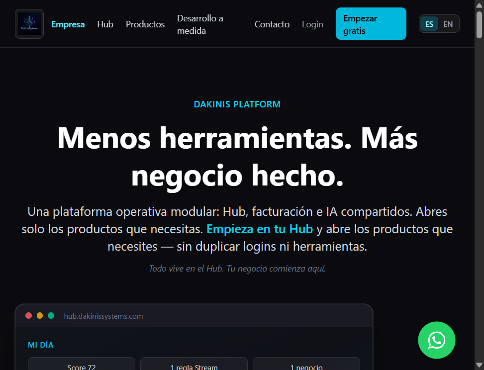
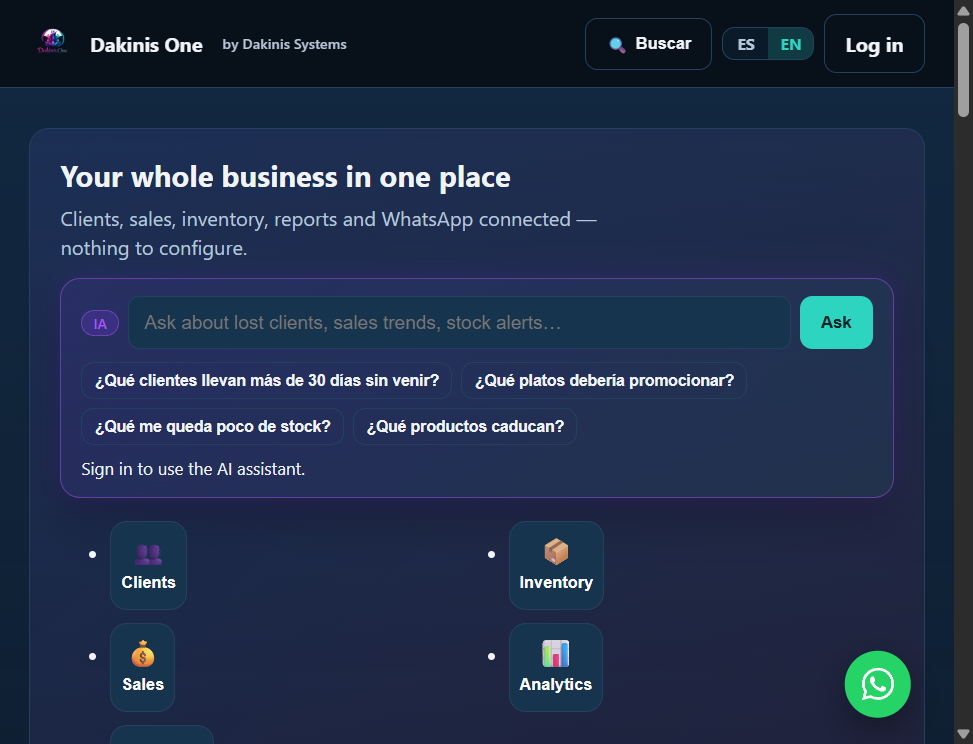
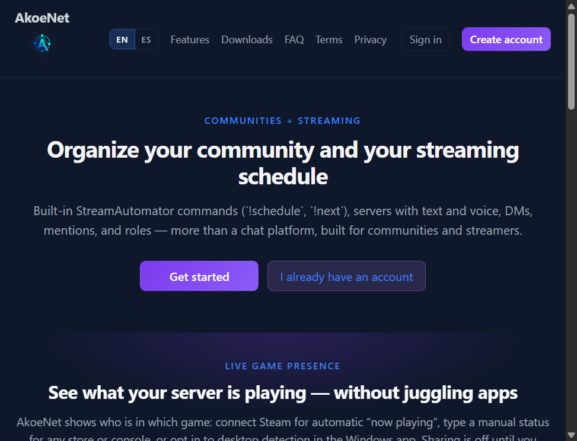
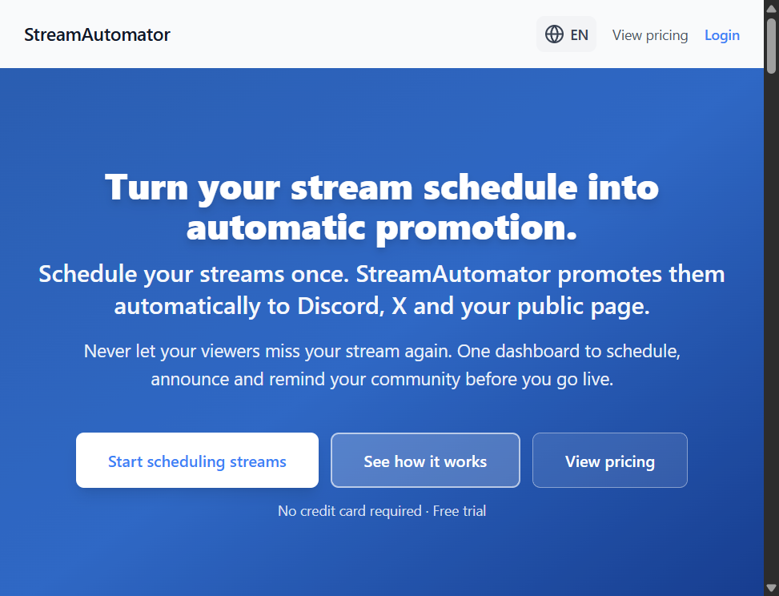

Soporte a gran escala
Soporte N1/N2 en un entorno universitario multi-sede con alto volumen de trabajo.
IT SUPPORT · SISTEMAS · AUTOMATIZACIÓN
Especialista senior en soporte IT | Help Desk N1/N2
Windows · Active Directory · Sistemas e infraestructura
Experiencia en IT. Visión de sistemas. Mentalidad de desarrollo.
Profesional de soporte IT con más de 15 años de experiencia en soporte técnico N1/N2, administración de sistemas y resolución de incidencias en entornos corporativos. Experiencia dando soporte a más de 2.000 usuarios y gestionando un volumen de 150–200 incidencias semanales. Sólida base en Windows, Active Directory, GPO, diagnóstico de hardware y software, y asistencia remota. Formación Full Stack y experiencia práctica construyendo aplicaciones web, APIs REST y bases de datos. Orientado a la resolución de problemas, la calidad del servicio y la integración entre soporte técnico, desarrollo y operaciones IT.
Soporte N1/N2 en un entorno universitario multi-sede con alto volumen de trabajo.
Despliegue en 7 sedes de la universidad.
Aplicación de inventario desarrollada con Java y PHP.
Logros seleccionados
Infraestructura · MVP en evolución · código y web públicos

Base técnica del ecosistema Dakinis: orquestación Docker, gateway, bases de datos y documentación de arquitectura para varios productos.
Mi aportación: arquitectura de servicios, infraestructura, organización de despliegues y documentación operativa.
Docker, PostgreSQL, Redis, Gateway, Node.js
Producto SaaS · demo pública · en evolución

Producto Dakinis One: aplicación modular de gestión empresarial (clientes, operaciones e inventario).
Mi aportación: desarrollo Full Stack, APIs, lógica de negocio y estructura modular de la aplicación.
React, Vite, Node.js, Fastify, PostgreSQL, Redis
Aplicación web · demo pública · en evolución

Plataforma comunitaria con chat y voz en tiempo real, roles, DMs, presencia de juego e integración con StreamAutomator; web, escritorio (Tauri) y móvil.
Mi aportación: frontend React, comunicación en tiempo real (Socket.IO), WebRTC y empaquetado multiplataforma.
React, Vite, Socket.IO, WebRTC, Tauri, Capacitor, Node.js, Express, PostgreSQL, Redis
Automatización · demo pública · en evolución

SaaS para programar streams, anuncios automáticos (Discord, X), página pública del horario, bots de chat y recordatorios.
Mi aportación: backend de planificación, workers (BullMQ/Redis), integraciones OAuth/Stripe y persistencia PostgreSQL/Supabase.
React, Vite, Node.js, Express, PostgreSQL, Redis, BullMQ, Supabase, Socket.IO
Formación en JavaScript, React, Python, Flask, SQL y APIs REST.
Certificaciones y formación técnica
Cuento con disponibilidad inmediata · Abierto a reubicación en Europa · Híbrido y presencial